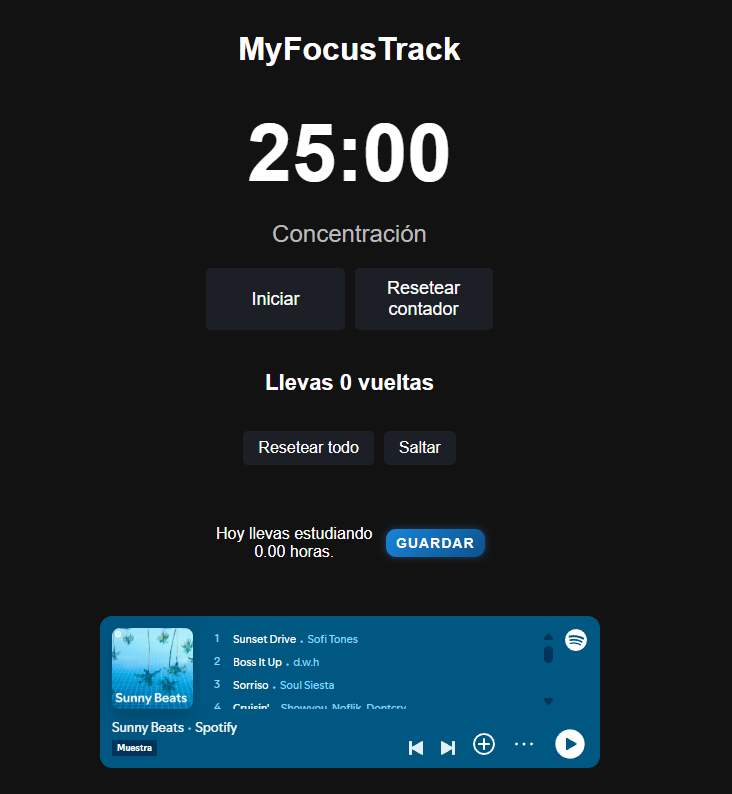
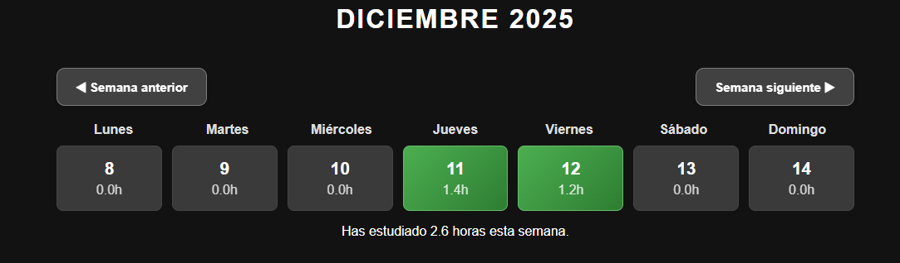
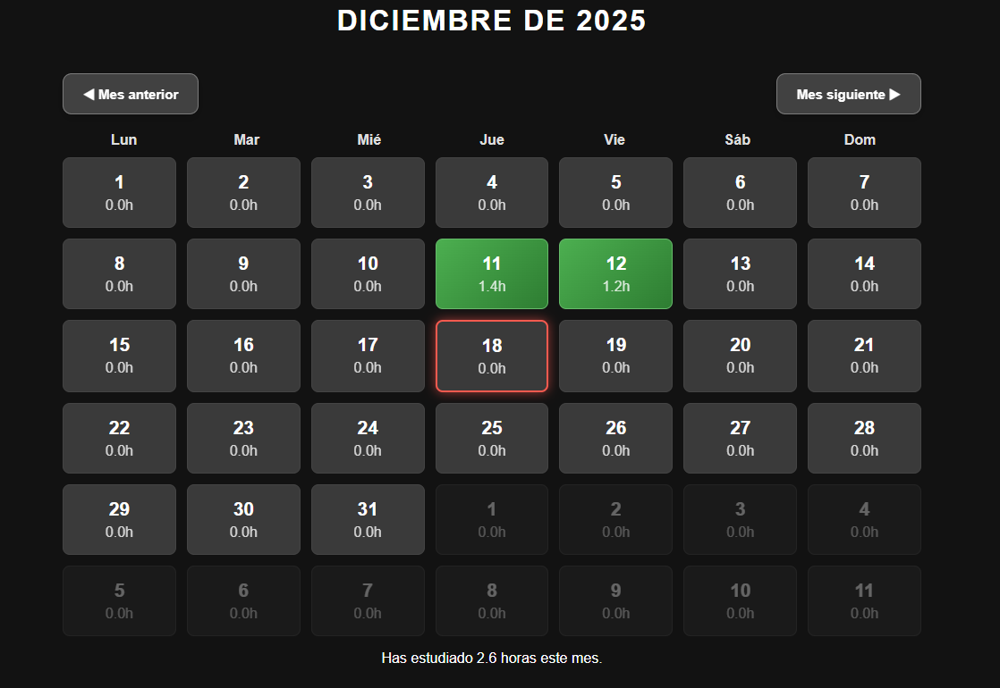
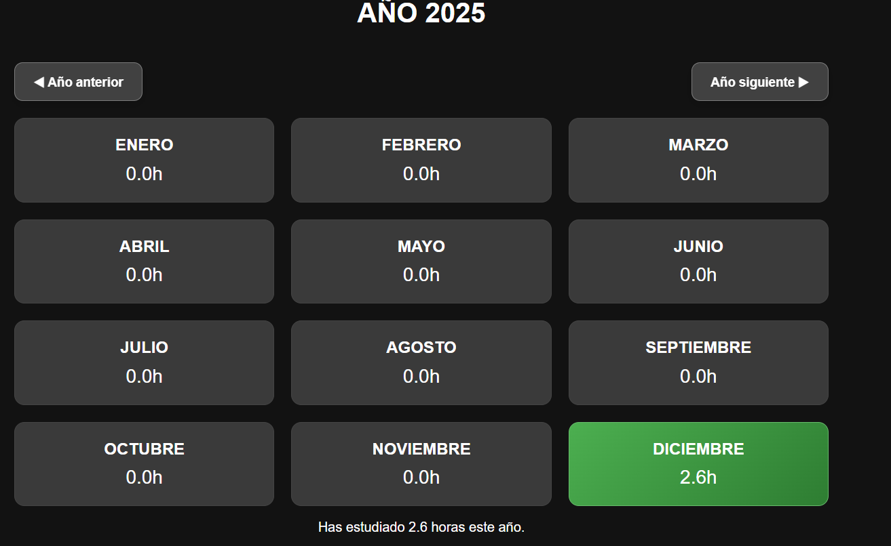
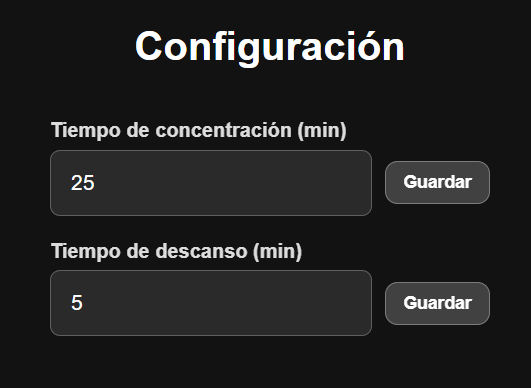

Al iniciar sesión o registrarte, puede que la aplicación tarde unos segundos en responder. Esto ocurre porque el servidor se "duerme" cuando no está en uso, y necesita un momento para activarse. ¡No te preocupes, esto es normal y no afecta tu experiencia! Te avisaremos cuando la sesión se haya iniciado correctamente.
MyFocusTrack es una aplicación de productividad basada en la técnica Pomodoro, pero con una diferencia clave: no solo te ayuda a concentrarte, sino que registra tus horas reales de estudio.

A diferencia de otras apps Pomodoro, MyFocusTrack te permite guardar y visualizar tu tiempo de estudio de forma clara:



